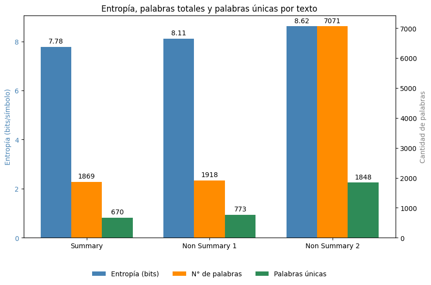

Purpose of this website
La Real Expedición Filantrópica de la Vacuna or The Balmis Expedition was the first "global" healthcare attempt on preventing the spreading of a desease: smallpox. It has been studied extensively by scholars in fields that go from humanities to medicine; one of the most prominent being Dr. Susana María Ramírez Martín. When listening her talk, she will often refer to the manuscripts on the Expedition guarded by the General Archive of Indies as two piles of papers with a considerable height. Of course, at the time of her first contact with these files, the Archive handed them as they are; currently, you are not longer allowed to touch them and can only access them by the digital version they provide you with in their Researcher's room. Despite that, we can not deny the documentation on this topic is publicly available on site (and not behind a pay-wall). Still, not everyone interested in the matter can easily go this Spanish archive to consult the manuscripts and read them. Thus, my main objective here is to facilitate the accesibility of this documents for other researchers interested in the subject.
Content of the website
Here you will find, among other things, transcribed versions of some of the most relevant documents used for the study of this Balmis Expedition in their passing through what is now the Peruvian territory.
- Transcriptions of several documents from the Indiferente 1558A
- Transcriptions the Record Book of the Junta de Vacuna of Lima
- Personal attempts at classifying the documentation showcase here
- Maps that showcase some routes the Expedition did in America
What can I do with this data? Mini project for the ESU DH 2026
It is possible to do experiments with the data available. For example, I would like to know whether summary and non summary versions of some of the expedition's documents are possible to measure in terms of entropy level.
In just one sentence, it can be framed as: Does the entropy in a text correlates with an specific version of a text?
Hypothesis
Hypothesis 1: A high entropy level in a summary version is explained by the use of very specific words to account for something that can be written with common ones in a non summary version of the same event.
Hypothesis 2: A low entropy level in a summary version is explained by the use of fixed phrases that can account for different statements that use more detailed vocabulary in a non summary version of the same event.
Results

Data
The files needed for this calculation are .txt runned by a Python code. You can find them here.
How it was made
The transcriptions that are available in this website are all in .html for display purposes. In order to work with them, it is necessary to convert them into .txt files, wich are easier to handle with Python when it comes to text analysis. Once the .txt are ready, it is a must to make the data "nicer"; this means to strip out all ortographic elements (?, !, ", [, ., etc.) and extra annotation information (number of folio, metadata, etc.).
The rest is pretty straight forward. I used the scripts on entropy provided during the classes of the ESU DH 2026 on Measuring Manuscripts by Christian Casey. Finally, I presented my results in a simple bar grap using Python's library Matplotlib.